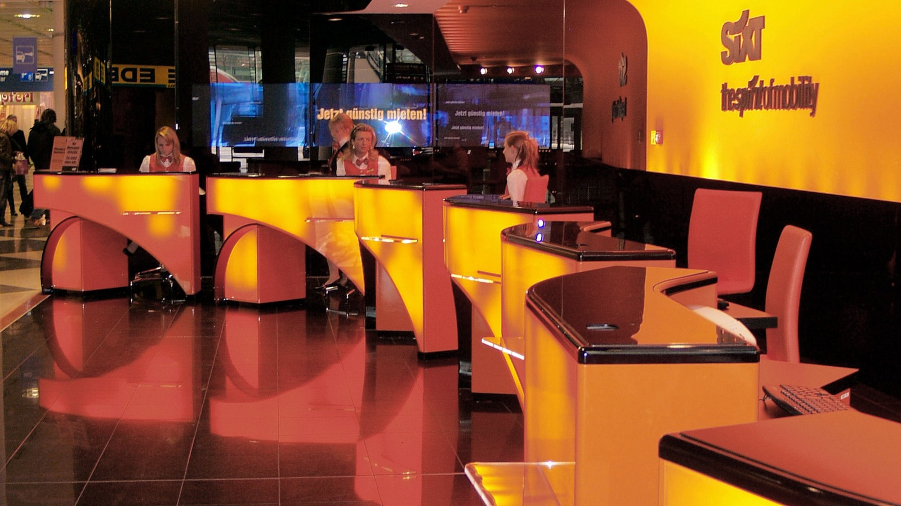

Reserva eficiente para empresas: como evitar perda por cancelamento e no-show

O mecanismo por tras do problema
No-show e cancelamento de última hora são falhas de processo. Com governança simples de reserva, a empresa reduz perda financeira e ruído operacional.
Leitura de contexto
Com maior controle de custos nas empresas, perdas evitáveis em reservas passaram a ser tratadas como indicador de eficiência operacional.
Sinais de que o processo de reserva esta frouxo
- Seu time reserva em canais diferentes sem padrão.
- Há recorrência de alteração de agenda perto da retirada.
- Você quer reduzir desperdício sem criar burocracia excessiva.
Desenho do fluxo unico
- Centralize solicitações de reserva em um fluxo único com responsável definido.
- Aplique janela mínima de confirmação e política clara de cancelamento.
- Inclua checklist pré-viagem com status de voo, agenda e condutor.
- Ative lembretes automáticos de retirada para reduzir esquecimento.
- Monitore taxa de no-show por área e corrija causa raiz mensalmente.
Indicadores de controle
- taxa de no-show por area
- tempo medio entre pedido e confirmacao
- percentual de reservas alteradas em cima da hora
- perda financeira por cancelamento evitavel
Falhas de projeto mais comuns
- Não definir dono do processo de reserva.
- Permitir reserva sem validação de agenda real.
- Tratar no-show como evento isolado e não como indicador.
Onde colocar a camada de nuance
Governanca nao precisa virar burocracia. O erro e padronizar sem considerar contexto de viagem, urgencia e autonomia do time.
FAQ
Qual meta razoável de no-show?
Depende do volume, mas tendência saudável é reduzir continuamente com processo e visibilidade.
Lembrete automático realmente funciona?
Sim, principalmente quando integrado ao checklist de viagem e confirmação de condutor.
Como tratar áreas com maior taxa de perda?
Com revisão de causa, ajuste de política e treinamento objetivo de operação.
Conclusao
Implemente um fluxo único de reserva em 7 dias e acompanhe a queda de no-show no mês seguinte.